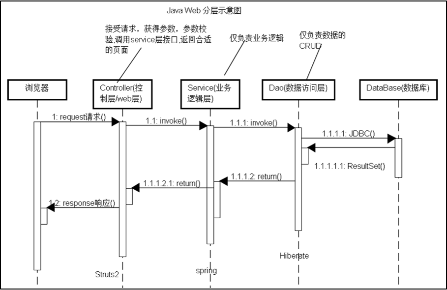

by 胡荆陵 / 178502261@qq.com
为什么需要web自动化测试?
不需要理论，直接以本人遇到的情况为例
尝试说明没有web自动化测试，将面临怎么样的局面?

| 层次 | 测试环境 | 测试方式 | 常用技术 |
|---|---|---|---|
| dao,service | java | 自动 | 基于Spring托管容器 |
| controller | java | 自动 | 基于模拟请求/响应 |
| 浏览器端 | web | 手动 | 无 |
公司内部管理系统项目，由于采用迭代开发模式，核心模块每次迭代都需大量手动回归测试，成本较大。
每次学员上机考试提交的web项目，同样的题目需要反复手动执行后披卷，工作量大。
geb
// CSS 3 selectors
$("div.some-class p:first[title='something']")
// Find via index and/or attribute matching
$("h1", 2, class: "heading")
$("p", name: "description")
$("ul.things li", 2)
// 'text' is special attribute for the element text content
$("h1", text: "All about Geb")
// Chaining
$("div").find(".b")
$("div").filter(".c").parents()
$("p.c").siblings()
class LoginPage extends Page {
static url = "http://myapp.com/login"
static at = { heading.text() == "Please Login" }
static content = {
heading { $("h1") }
loginForm { $("form.login") }
loginButton(to: AdminPage) { loginForm.login() }
}
}
class AdminPage extends Page {
static at = { heading.text() == "Admin Section" }
static content = {
heading { $("h1") }
}
}
Browser.drive {
to LoginPage
assert at(LoginPage)
loginForm.with {
username = "admin"
password = "password"
}
loginButton.click()
assert at(AdminPage)
}
需补充内容...
需补充内容...
感谢 苏州大学 陈建明 教授平日的指导
和带给本人软件测试方面的启发!
如有任何意见和建议，请联系:
178502261@qq.com